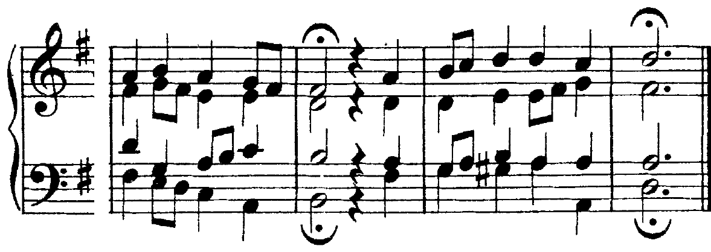

La settima di dominante a quattro parti: com’è fatta, quando si scrive completa e quando incompleta, dove va.
La forma completa o incompleta è la logica conseguenza del corretto movimento delle parti.
Carlo Marenco, Manuale d’armonia, p. 70
C11La settima di dominante, pp. 302–303
Sezione C, unità 11, lezione 33: origine, struttura, rivolti. La stessa settima nella melodia: B5, lezione 16 (pp. 154–155). Il libro non tratta la forma incompleta.
La settima di dominante è la quadriade «costruita sul V grado del modo maggiore e minore “armonico”», formata da «una terza maggiore, una quinta giusta e una settima minore»; «non necessita di preparazione» e si cifra V⁷ (Marenco, Manuale d’armonia, p. 69). Nasce da dissonanze melodiche sulla dominante (nota di passaggio, di volta, ritardo), rimaste nell’uso come accordo: «l’aggiunta di una settima diatonica a una triade ne rafforza generalmente la funzione» (libro, C11, p. 302).
| do maggiore | la minore | le due note che si muovono per forza | |
|---|---|---|---|
| V⁷ | sol–si–re–fa | mi–sol♯–si–re | la terza (sensibile) sale; la settima scende di grado |
Fra la sensibile e la settima c’è il tritono (si–fa, sol♯–re): nella risoluzione le due note si muovono in direzioni opposte, per grado.
La V⁷ può essere in forma completa («presenza di tutti e quattro i suoni») o in forma incompleta («omissione della quinta e raddoppio della fondamentale»). Nella risoluzione sulla tonica la fondamentale va alla tonica, la settima scende di grado, la sensibile al soprano sale; in una parte interna può scendere alla quinta «purché proceda per moto contrario con il basso». Dalla forma completa esce quindi una tonica incompleta (sensibile che sale) o completa (sensibile che scende); dalla forma incompleta, in cui la seconda fondamentale resta ferma, sempre una tonica completa (Marenco, pp. 69–70).
Alle bb. 1–2 il fa del soprano, preso dal IV, resta fermo e diventa la settima; la forma è incompleta (sol al basso e al contralto, si al tenore). Nella risoluzione il si sale al do, il fa scende al mi, il sol del contralto resta: tonica completa. Alle bb. 7–8 la V⁷ è completa e la settima nasce dall’ottava del tenore (sol–fa sopra il basso tenuto); il si del soprano sale, il fa scende al mi, il re va al do: tonica incompleta, con la fondamentale triplicata.
Trattare il fa come una nota libera e portarlo al sol: la dissonanza non si scioglie e la tonica arriva senza il mi che il fa doveva dare. La settima scende di grado; si controlla per prima, insieme alla sensibile.
«Nel collegamento IV–V⁷ la forma incompleta è da preferirsi a quella completa derivata da due quinte parallele» (Marenco, p. 70). Il do che sta una quinta sopra il fa del basso, salendo al re, fa di nuovo quinta con il sol. Senza il re il problema non c’è: è la soluzione delle bb. 1–2 dell’esempio.
Un caso a parte, che torna con i rivolti (U5 L2): se la V⁷ va al I⁶, la settima che scende raddoppia per moto retto il mi del basso (ottave nascoste); Marenco la fa allora salire «in via del tutto eccezionale» (p. 70).
Nella risoluzione d’inganno la V⁷ va al VI grado. Qui «la settima deve assumere sempre la forma completa», e i suoni risolvono come nella cadenza d’inganno: la sensibile sale di grado, le altre parti vanno per moto contrario al basso (Marenco, p. 70). La settima scende lo stesso: nel VI cade sulla quinta. Il VI ha così la terza raddoppiata (U4 L1).
Nel periodo in sol maggiore la prima frase si ferma alla b. 4 sul VI: dopo la 6/4 cadenzale e la V⁷ completa (la settima do nasce dall’ottava del soprano, 8–7), il fa♯ del contralto sale al sol, il do del soprano scende al si, il la del tenore scende al sol, il basso sale al mi. La seconda frase ripete la formula e chiude alla b. 8 con la cadenza perfetta.
Scrivere la V⁷ incompleta prima del VI. In do maggiore il sol raddoppiato in una voce superiore non ha una via buona: salendo al la fa ottave parallele con il basso, scendendo al mi arriva all’unisono con la settima («2a su unisono», Marenco, p. 70). Prima del VI la forma è completa.
Il corale che chiude la cantata «Ich freue mich in dir», brano guida dell’unità, è in re maggiore. Alla b. 9, dopo il I⁶ e il V⁶, sull’ultimo movimento c’è la V⁷ completa (la–do♯–mi–sol); alla b. 10 arriva il VI: la settima del soprano scende al fa♯ già sull’ultimo ottavo, il contralto va dal mi al re; il tenore, voce interna, porta la sensibile al si e il VI raddoppia la fondamentale. Alla b. 11 il basso sale al la acuto: 6/4 cadenzale, con il re al soprano; sull’ultimo movimento il basso scende al la grave e le voci formano la V⁷ incompleta (la, la, sol, do♯, senza il mi). Nella b. 12 il do♯ sale, il sol scende, il la del tenore resta: la tonica è completa.

Si ascoltano le bb. 9–12 due volte. Alla prima si alza la mano sull’accordo della b. 10, che non è la tonica; alla seconda si canta a mezza voce il soprano re–do♯–re delle bb. 11–12.
Nel corale BWV 111/6 (U4 L5) la seconda frase chiude in la minore. Alla b. 4 il basso si ferma sul mi; sul quarto movimento il tenore scende dal mi al re, con le semicrome di volta re–do–re: è la settima, e l’accordo è completo (mi–sol♯–si–re). Nella b. 5 il re scende al do, il si del soprano al la, e la sensibile del contralto, sol♯, scende di terza al mi: la tonica è completa. Il basso, che scende di quinta, va qui nella stessa direzione della sensibile: Bach la fa scendere per avere la quinta nell’accordo finale della frase.
Si ascoltano le bb. 3–5 seguendo il contralto: alla b. 4 il sol♯, poi la discesa al mi. Al secondo ascolto si segue il tenore e si canta il re–do della settima.
Realizza a quattro parti, con il la al soprano. 1. Le due V⁷: la b. 2 viene dopo il IV (forma incompleta), la b. 7 dopo la 6/4 (forma completa, settima dall’ottava). 2. Le risoluzioni: settima giù, sensibile su. 3. Il resto, con la nota comune tenuta. 4. Il controllo.
Sul V grado: terza maggiore, quinta giusta, settima minore. Non si prepara. La settima scende di grado, la sensibile sale.
Completa: tonica incompleta, o completa se la sensibile interna scende. Incompleta (senza quinta, fondamentale raddoppiata): tonica completa. Dopo il IV, incompleta.
V⁷–VI con la forma completa: sensibile su, settima giù, terza del VI raddoppiata.
Venerdì, ora 32: i rivolti della settima di dominante (6/5, 4/3, 2). La lezione si chiude con il solfeggio parlato, cantato e ritmico.
Compiti per la prossima volta
Realizza a quattro parti, con il fa♯ al soprano. 1. Per ogni V⁷ decidi la forma: dopo il IV incompleta, prima del VI completa, dopo la 6/4 completa con la settima dall’ottava. 2. Le risoluzioni: settima giù, sensibile su. 3. Il resto. 4. Il controllo.
Alle bb. 2 e 9 la V⁷ viene dopo il IV; alla b. 8 la cadenza d’inganno; la b. 4 è una 6/4 cadenzale sul la acuto, con il V sul la grave.
Sul quaderno, a matita. La foto del lavoro finito va su Classroom. Nel Workbook: apri l’esercizio C2-U5-L1-05 ↗
Compiti per la prossima volta
n. 260 e n. 261 parlato · n. 262 e n. 263 cantato · n. 264 e n. 265 ritmico
Ogni pezzo a tempo, senza fermarti: il parlato a nomi, il cantato prendendo il primo suono dalla tastiera, il ritmico battendo la pulsazione.
Scrivi la melodia sul quaderno, in chiave di violino: otto battute in 12/8, do maggiore. Il primo suono è do. Prima il riferimento, poi tutto due volte, ogni coppia di battute due volte, il collegamento 1–4, 3–6 e 5–8, e tutto per controllare.
Il riferimento: accordo di tonica e primo suono
Il dettato · otto battute
Le sezioni (riferimento, tutto, le coppie, il collegamento) si ascoltano una per una e si ripetono quanto serve; le fasi fanno la procedura della classe, con gli annunci e le pause, da qualunque punto.
Sul quaderno scrivi in testa la sigla C2-D-U05-L1. Si corregge all’inizio della prossima lezione.
Compiti per la prossima volta
Scrivi un contrappunto di seconda specie (due note contro una) sotto il canto fermo, in modo ionico (finale do): undici battute. Comincia su una consonanza perfetta, alla cadenza la sensibile sale alla finale, niente quinte e ottave consecutive.
Sul quaderno, con la sigla C2-CP-U05-L1 in testa; la foto va su Classroom.
Scritto: Un basso cifrato di dieci battute con la settima di dominante (Workbook, esercizio C2-U5-L1-05), sul quaderno; la foto va su Classroom. Solfeggio dal quaderno di lettura: parlato n. 260, 261; cantato n. 262, 263; ritmico n. 264, 265 (a tempo, senza fermarsi). Dettato C2-D-U05-L1 dalla pagina della lezione (sezioni da ascoltare, o le fasi della procedura guidata), sul quaderno con la sigla. Contrappunto di seconda specie sul canto fermo (C2-CP-U05-L1).
In classe
A nomi, a tempo, con la mano che batte. Chi si ferma riparte dalla battuta dopo.
Apri il n. 256 nel quaderno di lettura ↗ chiave di tenore · 4/4
In classe
Si prende il tono dalla tastiera, si canta insieme; poi a gruppi.
Apri il n. 257 nel quaderno di lettura ↗ chiave di violino · 4/4 · sol maggiore
Apri il n. 258 nel quaderno di lettura ↗ chiave di violino · 3/4 · do maggiore
In classe
Tutti insieme, battendo la pulsazione. Poi a file, due battute a testa.